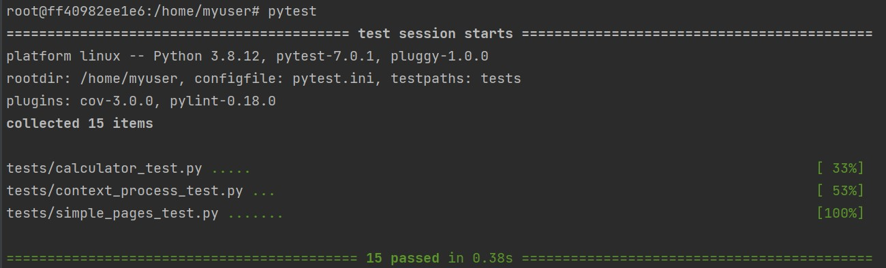

Pytest
pytest is a mature full-featured Python testing tool that helps you write better programs
How to use pytest?
-
Install pytest:
pip install pytest -
Create a testing py. Here is an example from my code

-
Run pytest and it will let you know your test is whether pass or fail

Simple pages creation and testing
Creating pages
-
Create and configure an instance of the Flask application inside __init__.py
-
Run Flask app by calling app = create_app() in run.py
-
Create a base template file inside folder templates, which other HTML files will inherit from
Testing pages
- Identify tests folder and create tests for pages inside it
- Sending Requests with the Test Client by creating a test function and take "client" as its parameter
- Check whether the page is working by asserting response.status_code == 200
- You could create other assertions
- response.status_code == 404 means the page does not exist
Links
Project Outline
- docker_flask <-- Project Root
- .github <-- Folder is for GitHub
- workflows <-- GitHub Actions runs .yml files
- app <-- Flask app root
- simple_pages <-- Folder includes html pages
- static <-- Folder for css, images and js folders that include static files. Static files are files that clients download as they are from the server.
- templates <-- Folder for a base template file, which other HTML files will inherit from
- __init__.py <-- Where Flask app is created and configured
- run.py <-- Allows Gunicorn to serve the app in production
- tests <-- Folder for page tests or other tests
- simple_pages_tests.py <-- A file that do test for project pages created
- docker-compose.yml <-- Orchestration file that contains the configuration to develop locally, it overrides the Dockerfile to run the flask development server instead of running the gunicorn server that is used for hosting on Heroku
- Dockerfile <-- File used to create an image to run in a container that runs the program
- requirements.txt <-- A plain text file that lists down the python package requirements
- readme.md <-- a guide that gives visitors a detailed description of my project